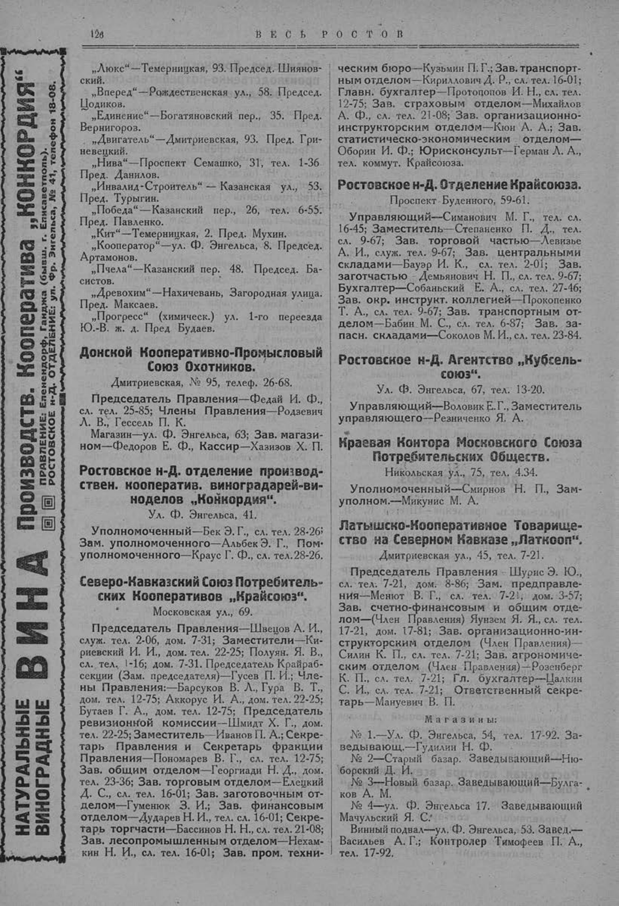

Лист источника 176
Скан

Распознанный текст
126 В Е С Ь Р О С Т О В
НАТУРАЛЬНЫЕ ВИНОГРАДНЫЕ ВИНА Производств. Кооператива „КОНКОРДИЯ“
ПРАВЛЕНИЕ: Еленендорф, Ганджа (бывш. г. Елисаветполь).
РОСТОВСКОЕ н-Д. ОТДЕЛЕНИЕ: ул. Фр. Энгельса, № 41, телефон 18-08.
„Люкс“—Темерницкая, 93. Председ. Шиянов-
ский.
„Вперед“—Рождественская ул., 58. Председ.
Цодиков.
„Единение“—Богатяновский пер., 35. Пред.
Вернигороз.
„Двигатель“—Дмитриевская, 93. Пред. Гри-
невецкий.
„Нива“—Проспект Семашко, 31, тел. 1-36.
Пред. Данилов.
„Инвалид-Строитель“ — Казанская ул., 53.
Пред. Турыгин.
„Победа“—Казанский пер., 26, тел. 6-55.
Пред. Павленко.
„Кит“—Темерницкая, 2. Пред. Мухин.
„Кооператор“—ул. Ф. Энгельса, 8. Председ.
Артамонов.
„Пчела“—Казанский пер. 48. Председ. Ба-
систов.
„Древохим“—Нахичевань, Загородная улица.
Пред. Максаев.
„Прогресс“ (химическ.) ул. 1-го переезда
Ю.-В. ж. д. Пред Будаев.
Донской Кооперативно-Промысловый
Союз Охотников.
Дмитриевская, № 95, телеф. 26-68.
Председатель Правления—Федай И. Ф.,
сл. тел. 25-85; Члены Правления—Родзевич
Л. В., Гессель П. К.
Магазин—ул. Ф. Энгельса, 63; Зав. магази-
ном—Федоров Е. Ф., Кассир—Хазизов Х. П.
Ростовское н-Д. отделение производ-
ствен. кооператив. виноградарей-ви-
ноделов „Конкордия“.
Ул. Ф. Энгельса, 41.
Уполномоченный—Бек Э. Г., сл. тел. 28-26;
Зам. уполномоченного—Альбек Э. Г., Пом.
уполномоченного—Краус Г. Ф., сл. тел. 28-26.
Северо-Кавказский Союз Потребитель-
ских Кооперативов „Крайсоюз“.
Московская ул., 69.
Председатель Правления—Швецов А. И.,
служ. тел. 2-06, дом. 7-31; Заместители—Ки-
риевский И. И., дом. тел. 22-25; Полуян. Я. В.,
сл. тел. 1-16; дом. 7-31. Председатель Крайраб-
секции (Зам. председателя)—Гусев П. И.; Чле-
ны Правления:—Барсуков В. Л., Гура В. Т.,
дом. тел. 12-75; Аккорус И. А., дом. тел. 22-25;
Бутаев Г. А., дом. тел. 12-75; Председатель
ревизионной комиссии—Шмидт Х. Г., дом.
тел. 22-25; Заместитель—Иванов П. А.; Секре-
тарь Правления и Секретарь фракции
Правления—Пономарев В. Г., сл. тел. 12-75;
Зав. общим отделом—Георгиади Н. Д., дом.
тел. 23-36; Зав. торговым отделом—Елецкий
Д. С., сл. тел. 16-01; Зав. заготовочным от-
делом—Гуменюк З. И.; Зав. финансовым
отделом—Дударев Н. И., тел. сл. 16-01; Секре-
тарь торгчасти—Бассинов Н. Н., сл. тел. 21-08;
Зав. лесопромышленным отделом—Нехам-
кин Н. И., сл. тел. 16-01; Зав. пром. техни-
ческим бюро—Кузьмин П. Г.; Зав. транспорт-
ным отделом—Кириллович Д. Р., сл. тел. 16-01;
Главн. бухгалтер—Протопопов И. Н., сл. тел.
12-75; Зав. страховым отделом—Михайлов
А. Ф., сл. тел. 21-08; Зав. организационно-
инструкторским отделом—Кюн А. А.; Зав.
статистическо-экономическим отделом—
Оборин И. Ф.; Юрисконсульт—Герман Л. А.,
тел. коммут. Крайсоюза.
Ростовское н-Д. Отделение Крайсоюза.
Проспект Буденного, 59-61.
Управляющий—Симанович М. Г., тел. сл.
16-45; Заместитель—Степаненко П. Д., тел.
сл. 9-67; Зав. торговой частью—Левизье
А. И., служ. тел. 9-67; Зав. центральными
складами—Бауэр И. К., сл. тел. 2-01; Зав.
заготчастью Демьянович Н. П., сл. тел. 9-67;
Бухгалтер—Собаньский Е. А., сл. тел. 27-46;
Зав. окр. инструкт. коллегией—Прокопенко
Т. А., сл. тел. 9-67; Зав. транспортным от-
делом—Бабин М. С., сл. тел. 6-87; Зав. за-
пасн. складами—Соколов М. И., сл. тел. 23-84.
Ростовское н-Д. Агентство „Кубсель-
союз“.
Ул. Ф. Энгельса, 67, тел. 13-20.
Управляющий—Воловик Е. Г., Заместитель
управляющего—Резниченко Я. А.
Краевая Контора Московского Союза
Потребительских Обществ.
Никольская ул., 75, тел. 4.34.
Уполномоченный—Смирнов Н. П., Зам-
уполном.—Микунис М. А.
Латышско-Кооперативное Товарище-
ство на Северном Кавказе „Латкооп“.
Дмитриевская ул., 45, тел. 7-21.
Председатель Правления — Шурис Э. Ю.,
сл. тел. 7-21, дом. 8-86; Зам. предправле-
ния—Менют В. Г., сл. тел. 7-21, дом. 3-57;
Зав. счетно-финансовым и общим отде-
лом—(Член Правления) Яунзем Я. Я., сл. тел.
17-21, дом. 17-81; Зав. организационно-ин-
структорским отделом (Член Правления)—
Силин К. П., сл. тел. 7-21; Зав. агрономиче-
ским отделом (Член Правления)—Розенберг
К. П., сл. тел. 7-21; Гл. бухгалтер—Цалкин
С. И., сл. тел. 7-21; Ответственный секре-
тарь—Мануевич В. П.
Магазины:
№ 1.—Ул. Ф. Энгельса, 54, тел. 17-92. За-
ведывающ.—Гудилин Н. Ф.
№ 2—Старый базар. Заведывающий—Ню-
борский Д. И.
№ 3—Новый базар. Заведывающий—Булга-
ков А. М.
№ 4—ул. Ф. Энгельса 17. Заведывающий
Мачульский Я. С.
Винный подвал—ул. Ф. Энгельса, 53. Завед.—
Васильев А. Г.; Контролер Тимофеев П. А.,
тел. 17-92.